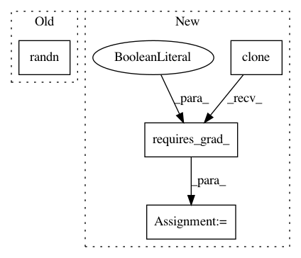

17e18750dd0b981460903ae631580d1d200509b5,test/lazy/test_kronecker_product_lazy_tensor.py,TestKroneckerProductLazyTensor,test_matmul_batch_mat,#TestKroneckerProductLazyTensor#,193
Before Change
avar = torch.tensor(a.repeat(3, 1, 1), requires_grad=True)
bvar = torch.tensor(b.repeat(3, 1, 1), requires_grad=True)
cvar = torch.tensor(c.repeat(3, 1, 1), requires_grad=True)
mat = torch.tensor(torch.randn(3, 24, 5), requires_grad=True)
kp_lazy_var = KroneckerProductLazyTensor(NonLazyTensor(avar), NonLazyTensor(bvar), NonLazyTensor(cvar))
res = kp_lazy_var.matmul(mat)
After Change
res = kp_lazy_var.matmul(mat)
avar_copy = avar.clone().detach().requires_grad_(True)
bvar_copy = bvar.clone().detach().requires_grad_(True)
cvar_copy = cvar.clone().detach().requires_grad_(True)
mat_copy = mat.clone().detach().requires_grad_(True)
actual = kron(kron(avar_copy, bvar_copy), cvar_copy).matmul(mat_copy)
self.assertTrue(approx_equal(res, actual))
In pattern: SUPERPATTERN
Frequency: 3
Non-data size: 4
Instances
Project Name: cornellius-gp/gpytorch
Commit Name: 17e18750dd0b981460903ae631580d1d200509b5
Time: 2018-09-21
Author: balandat@fb.com
File Name: test/lazy/test_kronecker_product_lazy_tensor.py
Class Name: TestKroneckerProductLazyTensor
Method Name: test_matmul_batch_mat
Project Name: cornellius-gp/gpytorch
Commit Name: 91b0d220c8e816766fd4565e1d2f5115d3afbefe
Time: 2018-10-12
Author: gpleiss@gmail.com
File Name: test/functions/test_inv_quad_log_det.py
Class Name: TestInvQuadLogDetBatch
Method Name: setUp
Project Name: cornellius-gp/gpytorch
Commit Name: f7b10102a3a0b08272634347ff3a65efd3df18ce
Time: 2019-04-04
Author: gpleiss@gmail.com
File Name: test/functions/test_inv_matmul.py
Class Name: TestInvMatmulNonBatch
Method Name: test_inv_matmul_multiple_vecs